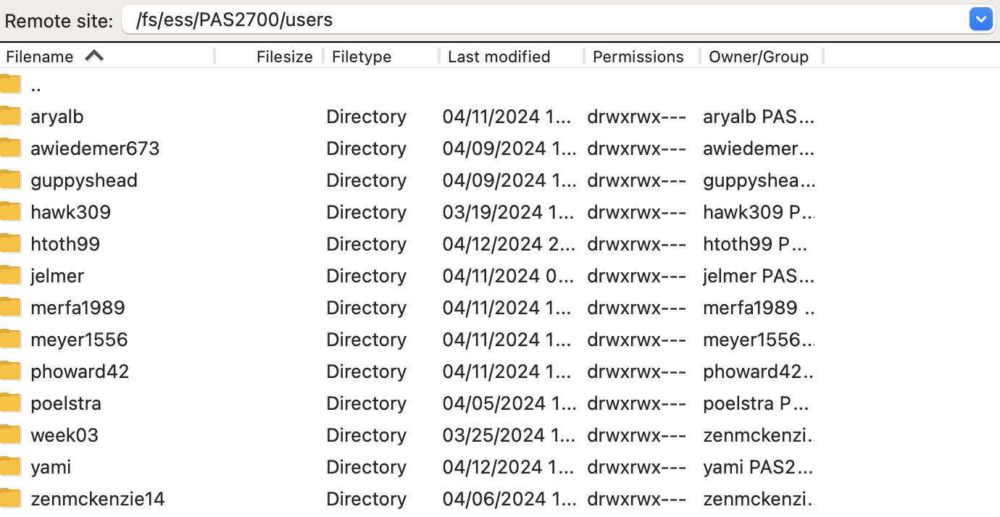

Course recap and file transfer
Week 7
1 Brief recap of what you learned in this course
In this course, you have learned to:
- Work in the Unix shell and use a variety of Unix commands
- Write simple but flexible shell scripts that use a set of best practices and accept arguments
- Run (bioinformatics) tools with CLIs, command-line interfaces
- Understand the basics of a supercomputer and get comfortable working with one (OSC)
- Use Conda to install and manage software environments
- Submit shell scripts as Slurm batch jobs
- Use the VS Code text editor as an IDE for shell code
- Write informal pipelines using runner scripts
- Use formal Nextflow/nf-core pipelines
- Structure your research project files in a consistent way that favors reproducibility
- Write in Markdown, for example to create README and notes files to document your research
- Use Git to version control your research project code and share this code with GitHub
As also mentioned in the introductory presentation, these skills should:
- Help you to do your research more reproducibly and efficiently
- Prepare you to work with large “omics” datasets
2 Miscellaneous notes
2.1 Best practices
Script arguments and hard-coding
We’ve been writing shell scripts that accept arguments, instead of including variable things like inputs and outputs in the scripts themselves. The latter method can be referred to as “hard-coding” these items.
You can use arguments also for things like settings, for example for bioinformatics program options that may you may want to vary among different runs of the script, or for information about your data like read length or RNA-seq library strandedness (as you did in last week’s exercises). If you don’t hard-code these options in your script but have arguments for them, it will be easier to re-use your script in different contexts.
But there is balance to be struck here, and you can also “hobble” your script with a confusing array of arguably too many arguments. Along those lines, here are two things to consider:
When you do hard-code potentially variable things in your script, it can be a good idea to define them clearly at the top of your script. We actually did this in our primary script to run the nf-core rnaseq pipeline, where we had the following lines to define a variable with the location of the workflow dir:
# Settings and constants WORKFLOW_DIR=software/nfc-rnaseq/3_14_0Such variables can be referred to as “constants”, since they are hard-coded in the script, and in shell code, ALL-CAPS is regularly used for them1.
It is also possible to make your shell script accept options. The example below uses both long and short options (e.g.
-o | --outdir). It also used “flag” options that turn functionality on/off (e.g.--no_gcbias) and options that take arguments (e.g.--infile).# Process command-line options while [ "$1" != "" ]; do case "$1" in -o | --outdir ) shift && outdir=$1 ;; -i | --infile ) shift && infile=$1 ;; --transcripts ) shift && transcripts=$1 ;; --no_gcbias ) gcbias=false ;; --dl_container ) dl_container=true ;; -h | --help ) script_help; exit 0 ;; -v | --version ) echo "Version 2024-04-13" && exit 0 ;; * ) echo "Invalid option $1" && exit 1 ;; esac shift doneSuch a script could for example be run like so:
sbatch scripts/salmon.sh -i my.bam -o results/salmon --no_gcbiasThat’s more readable less error-prone than “anonymous” positional arguments. It also makes it possible to add several/many settings that have defaults — when a script only takes arguments, all of them always need to be provided.
Program versions
Here is one small best-practice addition to shell scripts that was used in last week’s exercises, which I also wanted to point out here (you may want to use this in your final project!). For scripts that run bioinformatics tools, it’s a good idea include a line to print the program version. For example, the FastQC script contained the following lines at the end:
echo "# Used FastQC version:"
fastqc --versionThis way you’ll always have a clear record of the version that you used when you ran the script, at least if you keep the Slurm log file (and in last week’s exercises, we additionally moved Slurm log files to a logs dir within the output dir).
2.2 Using SSH to connect to OSC
Because OSC’s OnDemand web portal is so useful, we have been exclusively using that to connect to OSC. But not all supercomputers have such a web portal, and the classic way of connecting to supercomputers and other remote computers is using SSH (Secure SHell). You can also connect to OSC with SSH, and this can be a faster way than going through OnDemand when you’re comfortable in the Unix shell.
At least with a Mac or Linux computer, you just have to open a shell on your own computer and use the ssh command to “move your shell” to OSC:
ssh jelmer@pitzer.osc.edujelmer@pitzer.osc.edu's password:I have added a page with more information on connecting to OSC with SSH, which also includes information to:
- Avoid being prompted for your password every time you connect
- SSH-tunnel a local VS Code installation to OSC (!!)
3 File transfer to and from OSC with FileZilla
In week 5, I had added some self-study material about file transfer to and from OSC at the bottom of the lecture page on OSC. This material covers:
- Remote transfer commands like
scpandrsync(for small transfers) - SFTP, focusing on command-line usage (for transfers of any size)
- Globus (briefly) (for large transfers)
Here, let’s briefly go over what it probably overall the single best way to transfer files, since it works for transfers of any size, and is easy and quick: file transfer with a GUI-based SFTP client. There are a number of such programs, but I chose to show you FileZilla because it works on all operating systems2.
Go to the FileZilla download page — it should automatically display a big green download button for your operating system: click that and install and open the program.
To connect to OSC, find the Site Manager: click
Filein the top menu bar and thenSite Manager3. In the Site Manager:- Protocol: select “SFTP - SSH File Transfer Protocol”.
- Host: type
sftp.osc.edu(and you can leave the Port box empty). - Logon Type: Make sure “Normal” is selected.
- User: Type you OSC user name.
- Password: Type or copy your OSC password.
- Click the “Connect” button at the bottom to connect to OSC.

- Once connected, your main screen is split with a local file explorer on the left, and a remote file explorer on the right:
Transferring dirs and files in either direction is as simple as dragging and dropping them to the other side!
Your default location at OSC is your home dir in
/users/, but you can type a path in the top bar to e.g. go to/fs/ess/PAS2700/users:

4 Downloading files at the command line
When you need to get large files from public repositories like the NCBI (e.g. reference genome files, raw reads from the SRA), I would recommend not to download these to your own computer and then transfer them to OSC, but to download them directly to OSC using commands.
4.1 wget
You can download files from any URL that will allow you using the wget command. It has many options, but basic usage is quite simple:
# This will download the file at the URL to your current working dir
wget <URL>As an example, say that we want to download the reference genome FASTA and GTF files for Culex pipiens, the focal species of the Garrigos et al. RNA-seq data set that we’ve been working with. The files for that genome can be found at this NCBI FTP webpage.
You can right-click on any of the files and then click “Copy Link Address” (or something similar, depending on your browser) — let’s copy the URL to the assembly FASTA (.fna.gz) file. Then type wget and Space in your terminal and paste the URL:
wget https://ftp.ncbi.nlm.nih.gov/genomes/all/GCA/016/801/865/GCA_016801865.2_TS_CPP_V2/GCA_016801865.2_TS_CPP_V2_genomic.fna.gz--2024-04-13 13:33:16-- https://ftp.ncbi.nlm.nih.gov/genomes/all/GCA/016/801/865/GCA_016801865.2_TS_CPP_V2/GCA_016801865.2_TS_CPP_V2_genomic.fna.gz
Resolving ftp.ncbi.nlm.nih.gov (ftp.ncbi.nlm.nih.gov)... 130.14.250.12, 130.14.250.11, 2607:f220:41e:250::12, ...
Connecting to ftp.ncbi.nlm.nih.gov (ftp.ncbi.nlm.nih.gov)|130.14.250.12|:443... connected.
HTTP request sent, awaiting response... 200 OK
Length: 172895917 (165M) [application/x-gzip]
Saving to: ‘GCA_016801865.2_TS_CPP_V2_genomic.fna.gz’
100%[=====================================================================================================================>] 172,895,917 51.7MB/s in 3.2s
2024-04-13 13:33:20 (51.7 MB/s) - ‘GCA_016801865.2_TS_CPP_V2_genomic.fna.gz’ saved [172895917/172895917]Let’s list our downloaded file:
ls -lh-rw-r--r-- 1 jelmer PAS0471 165M Aug 5 2022 GCA_016801865.2_TS_CPP_V2_genomic.fna.gzcurl
wget and curl have similar functionality, so you don’t really need to learn to use both of them.
4.2 Other genomic downloads
For reference genome downloads, NCBI also has a relatively new and very useful tool called “datasets”. This is especially useful if you want to download multiple or many genomes — for example, you can download all available genomes of a certain (say, bacterial) genus with a single command.
For downloads from the Sequence Read Archive (SRA), which contains high-throughput sequencing reads, you can use tools like fasterq-dump and dl-fastq. Also handy is the simple SRA explorer website, where you can enter an NCBI accession number and it will give you download links.
Footnotes
But this is far from universal, it is also fairly common to use all-caps for all shell variables, but this is not what we’ve been doing.↩︎
And has a more intuitive user interface than CyberDuck, another very commonly used program that works both on Mac and Windows.↩︎
There is a also an icon in the far top-left to access this menu. Additionally, there is a “Quickconnect” bar but I’ve not managed to connect to OSC with that.↩︎